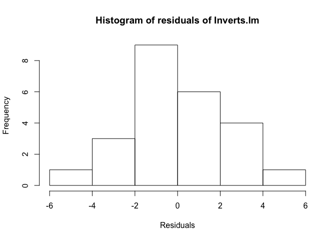

Linear regression
Why, and what?
Linear regression is a useful statistical technique that allows us to explore the relationship between a dependent variable of interest (also known as the response variable) and other, independent variables (also known as explanatory variables).
R has functions in the base statistics package that allow us to implement simple (and multiple) linear regression. There are also other packages that include functions for linear regression as the simple form of more complex analyses, such as linear mixed models - for example, see nlme and lme4. In this lesson, we will stick to linear regression in the base package.
Simple linear regression
Let’s start by considering a case where we want to look at the relationship between one response variable and one explanatory variable. With one explanatory variable, this is called simple linear regression.
The equation that describes this relationship is as follows, where x is the explanatory variable and y is the response variable:
\(\alpha\) and \(\beta\) are called parameters, where \(\alpha\) gives the intercept and \(\beta\) gives the slope, and \(\epsilon\) is the error term.
Simple linear regression estimates the relationship between x and y by fitting a straight line through the data points. The residuals are calculated as the differences between the modeled and measured values of the dependent variables for each value of the independent variable. To fit the model, linear regression uses the method of least squares, meaning that the sum of the squared residuals is minimized.
We’ll run a simple linear regression using the Inverts data. Read in the data if it’s not already in your environment:
# Read in Inverts data (first introduced in functions lesson)
Inverts <- read.csv(file="Data/Inverts.csv", stringsAsFactors=TRUE, header=TRUE)Look at your data!
If you’re interested in the relationship between two variables, the first step should always be to look at the data. This is important because it is possible for pairs of vectors with very different relationships to each other to have exactly the same summary statistics. An example of this is Anscombe’s quartet, constructed by the statistician Francis Anscombe in 1973. Each of these data sets has the same mean for x, the same mean for y (to 2 decimal places), the same correlation between x and y (to 3 decimal places) and the same linear regression (to 2 decimal places for the intercept and 3 for the slope).

Despite the similarities in summary statistics, it is clear that blindly implementing simple linear regression would be a very poor choice! Linear regression does a good job of describing the relationship between x and y for (a), but not for (b) and (d), and in (c), a single outlier leads to a less appropriate linear regression fit. (For underlying data, see anscombe.)
In conclusion: plot your data!
Let’s look at the relationship between richness and TOC in the Inverts dataset. We will start with a scatterplot of the two variables.
plot(Richness ~ TOC, data=Inverts, pch=19, las=1)
It looks like a linear regression would be a reasonable approach for this data set.
Running a linear regression
For linear regression in R, we use the function lm. We call the function, and assign the resulting model to a variable, using this general syntax (where the data are in a data frame called dataset):
# Linear regression of y variable versus x variable
model <- lm(dataset$y.variable ~ dataset$x.variable)
# OR
# Same result, cleaner syntax
model <- lm(y.variable ~ x.variable, data=dataset) So, for the Inverts data:
Inverts.lm <- lm(Richness ~ TOC, data = Inverts)Looking at the model object will give us the information about the coefficients - i.e., the intercept and the slope of the model - along with the original model formula.
Inverts.lm##
## Call:
## lm(formula = Richness ~ TOC, data = Inverts)
##
## Coefficients:
## (Intercept) TOC
## 16.91 58.25To get more information about the linear regression, we can use the summary function.
summary(Inverts.lm)##
## Call:
## lm(formula = Richness ~ TOC, data = Inverts)
##
## Residuals:
## Min 1Q Median 3Q Max
## -4.3934 -1.2998 -0.4218 1.6808 5.2575
##
## Coefficients:
## Estimate Std. Error t value Pr(>|t|)
## (Intercept) 16.915 1.969 8.592 1.77e-08 ***
## TOC 58.255 2.222 26.217 < 2e-16 ***
## ---
## Signif. codes: 0 '***' 0.001 '**' 0.01 '*' 0.05 '.' 0.1 ' ' 1
##
## Residual standard error: 2.39 on 22 degrees of freedom
## Multiple R-squared: 0.969, Adjusted R-squared: 0.9676
## F-statistic: 687.3 on 1 and 22 DF, p-value: < 2.2e-16Take a look at the Coefficients section of the output. The Estimate column tells us the intercept of the regression, as well as the slope of the relationship of Richness with TOC. The standard errors of these estimates is given in the next column over, Std. Error. The last column, Pr(>|t|), gives us the p-values. A p-value indicates significance by indicating the likelihood of your data given the null hypothesis (that the coefficients have values equal to 0). Specifically, it is the probability of finding the observed (or a “more extreme”) result if, in fact, the null hypothesis is correct. These p-values are based on the t-statistic given in the t value column.
From the p-values (and the asterisks next to them), we can see that both the intercept and the slope are significant, the latter indicating that richness is significantly dependent on total organic carbon.
You may also be interested in the adjusted r2 value, the F-statistic, and the p-value for the overall model - which, in simple linear regression, is the same as for the independent variable. These can be found in the last 2 lines of the output. The adj. r2 suggests that most of the variability in richness is explained by variation in TOC - such a high r2 is rare for ecological data! (Making up fake data is great, eh?)
You could obtain the same information by piping the output of the model to summary, without saving the model first. However, saving the model can be useful for looking at other aspects of it. For example, once the model is fit, it’s important to take a look at the residuals to decide whether the regression model is a good one for this data.
Check model assumptions
To assess the residuals, we will look at a plot of the residuals against the fitted values, to see if there are any apparent patterns. We can access the residuals using resid(Inverts.lm), and the fitted values using fitted(Inverts.lm).
plot(resid(Inverts.lm) ~ fitted(Inverts.lm), xlab="Fitted values", ylab="Residuals")
Fortunately, it doesn’t look like the residuals are dependent on the fitted values.
Now we’ll check the normality of the residuals. We can do that in two ways: first, through a histogram of the residuals, and second, with a QQ plot (more below). Remember that it is the residuals that need to be normal, not the underlying data!
We use the function hist to make a histogram of the residuals. The groupings are calculated by default, but you can change this with the argument breaks if you’d like.
hist(resid(Inverts.lm), xlab = "Residuals", main = "Histogram of residuals of Inverts.lm")
The distribution of values looks relatively normal. There might be a slight skew, but given the relatively small sample size, the histogram does not give us evidence to reject normality.
Now we’ll plot a QQ plot. A QQ plot compares the distribution of two given sets of data by plotting quantiles against each other, hence the Qs in QQ plot. With the qqnorm function, the input vector (here, the residuals of our linear regression model) is compared against normally distributed data. To do this, both data sets are sorted and then plotted against each other. If the input data set is normal, the points should fall along the line where x equals y. The function qqline plots that line, to make it easier to assess the data.
qqnorm(resid(Inverts.lm))
qqline(resid(Inverts.lm))When the data do not fall on the line, the shape of their curve can tell you about the distribution of the data. In our case, the QQ plot indicates that the residuals are normally distributed.
Extracting summary statistics
If you’re working with lots of linear regressions at once, e.g. if you are calculating rates for a linear process for many samples, it can be helpful to automatically extract summary statistics on the linear regression. Some of these are easier to extract than others. Let’s take another look at the model summary output, along with the attributes of the model summary, using the function attributes.
summary(Inverts.lm)##
## Call:
## lm(formula = Richness ~ TOC, data = Inverts)
##
## Residuals:
## Min 1Q Median 3Q Max
## -4.3934 -1.2998 -0.4218 1.6808 5.2575
##
## Coefficients:
## Estimate Std. Error t value Pr(>|t|)
## (Intercept) 16.915 1.969 8.592 1.77e-08 ***
## TOC 58.255 2.222 26.217 < 2e-16 ***
## ---
## Signif. codes: 0 '***' 0.001 '**' 0.01 '*' 0.05 '.' 0.1 ' ' 1
##
## Residual standard error: 2.39 on 22 degrees of freedom
## Multiple R-squared: 0.969, Adjusted R-squared: 0.9676
## F-statistic: 687.3 on 1 and 22 DF, p-value: < 2.2e-16attributes(summary(Inverts.lm))## $names
## [1] "call" "terms" "residuals" "coefficients"
## [5] "aliased" "sigma" "df" "r.squared"
## [9] "adj.r.squared" "fstatistic" "cov.unscaled"
##
## $class
## [1] "summary.lm"We can access the different attributes by name from the summary object. For example, let’s look at the adjusted r2.
summary(Inverts.lm)$adj.r.squared## [1] 0.9675749Pulling out the regression equation and the p-value of the model take a few more steps. All of the values are in the coefficients table.
summary(Inverts.lm)$coefficients## Estimate Std. Error t value Pr(>|t|)
## (Intercept) 16.91482 1.968642 8.592123 1.768433e-08
## TOC 58.25458 2.222021 26.216936 4.359055e-18To pull out a particular value, you could access it by specifying its position in the table.
# Get p-value for TOC, which is in the 2nd row and 4th column
summary(Inverts.lm)$coefficients[2, 4]## [1] 4.359055e-18Alternatively, you can specify the names of the rows and columns.
# Get p-value for TOC using row and column names
summary(Inverts.lm)$coefficients["TOC", "Pr(>|t|)"]## [1] 4.359055e-18For simple regression, the t-value and p-value for the linear fit between the two variables are the same as the t-value and p-value of the correlation between the two variables. Thus, you could also get the p-value by running a Pearson’s correlation, which you can do using the function cor.test with the method set to "pearson". You can then extract the p-value from this test. For cor.test, you can specify the x and y vectors, or you can pass it a formula.
# Pearson's correlation between TOC and Richness
# Using individual vectors, you could run this as:
# cor.test(Inverts$TOC, Inverts$Richness)
# Another option is to specify a formula
cor.test(~ Richness + TOC, data=Inverts)##
## Pearson's product-moment correlation
##
## data: Richness and TOC
## t = 26.217, df = 22, p-value < 2.2e-16
## alternative hypothesis: true correlation is not equal to 0
## 95 percent confidence interval:
## 0.9636184 0.9933256
## sample estimates:
## cor
## 0.9843702# Look at names of attributes
attributes(cor.test(~ Richness + TOC, data=Inverts))## $names
## [1] "statistic" "parameter" "p.value" "estimate" "null.value"
## [6] "alternative" "method" "data.name" "conf.int"
##
## $class
## [1] "htest"# Extract the p.value
cor.test(~ Richness + TOC, data=Inverts)$p.value## [1] 4.359055e-18Challenge
Use a simple linear regression to look at whether species richness is dependent on mean stream temperature in the
Invertsdata frame.Read in the
genes.csvdata file from the lesson on joining data frames. Examine the relationship between the abundance of nirS and the abundance of nosZ by plotting the data and then fitting a linear regression model. What are the p-value and the adjusted r2 of the overall model? Is the linear relationship significant?Read in the
climates.csvdata file from the lesson on joining data frames. Examine the relationship between mean annual precipitation (MAP) and mean annual temperature (MAT) by plotting the data and then fitting a linear regression model. What are the p-value and the adjusted r2 of the overall model? Is the linear relationship significant?Extract the slope, intercept, p-value, and adjusted r2 of the linear regression model of the relationship between MAP and MAT. That is to say, write a line of code that, when run, returns the desired value.
Write a function that returns a vector with the slope and intercept of a simple linear regression model. Test your function with the model that you created in the previous challenge question.
Looking at your regression
Once you’ve run a linear regression, you can plot it on a scatterplot. The simplest way to do this is to use the function abline and give it the model object as input.
plot(Richness ~ TOC, data=Inverts, pch=19, xlim=c(0, 1.6), ylim=c(0, 120)
, axes=F, ann=F) # Plot without axes
axis(1, pos=0, at=seq(0, 1.6, by=0.4), cex.axis=1.2) # Add x-axis; place it at y = 0
mtext(side=1, line=2, text="Total organic carbon (%)", cex=1.2)
axis(2, pos=0, las=1, cex.axis=1.2) # Add y-axis; place it at x = 0
mtext(side=2, line=2, text="Species richness", cex=1.2)
abline(Inverts.lm) # Plot linear regression
However, you can see that the line extends to the end of the plot margins, which can look awkward if you’ve specified the placement of your axes. An alternative approach is to draw a line with x and y coordinates of your choosing. For this plot, we might want to use x = 0.3 and 1.4. To calculate the appropriate y-values, we can use the predict function. This function uses the linear regression to calculate modeled values for the response variable based on the selected values for the explanatory variable. Once we have the y values, we can use the function lines to draw a line with specified x and y coordinates. We can use many of the same par arguments for lines as we can with points.
plot(Richness ~ TOC, data=Inverts, pch=19, xlim=c(0, 1.6), ylim=c(0, 120)
, axes=F, ann=F) # Plot without axes
axis(1, pos=0, at=seq(0, 1.6, by=0.4), cex.axis=1.2) # Add x-axis; place it at y = 0
mtext(side=1, line=2, text="Total organic carbon (%)", cex=1.2)
axis(2, pos=0, las=1, cex.axis=1.2) # Add y-axis; place it at x = 0
mtext(side=2, line=2, text="Species richness", cex=1.2)
# Calculate y values given specified x values, then plot x and y values
yvals <- predict(Inverts.lm, newdata=data.frame(TOC = c(0.3, 1.4)))
lines(x = c(0.3, 1.4), y = yvals, col="mediumorchid", lwd=2)
Multiple regression
Simple linear regression can be extended to include multiple explanatory variables. For example, is species richness related to the variability in current speed, as well as to organic carbon?
Look at your data!!
Again, it’s a good idea to look at your data! Let’s look at the relationship between species richness and current variability. (We won’t go into 3-dimensional graphs to look at all 3 variables.)
plot(Richness ~ CurrentVariability, data=Inverts, pch=19, las=1)
It really doesn’t look like there’s a relationship between these two variables, does it - linear or otherwise. Nonetheless, we’ll proceed with a multiple regression model, to demonstrate the process.
Fit the model
To do a multiple linear regression, we add variables to the formula in the lm function. As an example, let’s look at the relationship between the response variable Richness and the explanatory variables TOC and CurrentVariability. As with simple regression, we can look at the model with summary.
Inverts2.lm <- lm(Richness ~ TOC + CurrentVariability, data=Inverts)
summary(Inverts2.lm)##
## Call:
## lm(formula = Richness ~ TOC + CurrentVariability, data = Inverts)
##
## Residuals:
## Min 1Q Median 3Q Max
## -3.9756 -1.7563 0.3645 1.9718 3.9323
##
## Coefficients:
## Estimate Std. Error t value Pr(>|t|)
## (Intercept) 20.97942 3.17648 6.605 1.54e-06 ***
## TOC 58.23833 2.14752 27.119 < 2e-16 ***
## CurrentVariability -0.09649 0.06038 -1.598 0.125
## ---
## Signif. codes: 0 '***' 0.001 '**' 0.01 '*' 0.05 '.' 0.1 ' ' 1
##
## Residual standard error: 2.31 on 21 degrees of freedom
## Multiple R-squared: 0.9723, Adjusted R-squared: 0.9697
## F-statistic: 369.2 on 2 and 21 DF, p-value: < 2.2e-16The output suggests that species richness is significantly dependent on total organic carbon but not variability in current speed, and adding current speed to the model is not necessary for explaining variability in species richness.
If we replaced the + with *, the model would include both explanatory variables and their interaction. Just the interaction can be specified with :, as in TOC:CurrentVariability. So, both of these calls would include both explanatory variables (main effects) as well as their interaction:
# Specify main effects and interaction with one operator
lm(Richness ~ TOC * CurrentVariability, data=Inverts)
# Specify main effects separately from the interaction
lm(Richness ~ TOC + CurrentVariability + TOC:CurrentVariability) Let’s go back to the original model. If you want to do an F-test and compare F-values rather than t-values, you can use the drop1 function, which looks at the effect on the entire model of adding the specified variable last. This will be more important in the next lesson on ANOVA. In short, for a linear regression, you get the same p-values as you do using summary, but drop1 lets you pull out the F-values if you need them. In the function call, you give as arguments the original model, an argument specifying the terms to be considered for adding or dropping (.~. for all terms), and the test statistic of interest.
drop1(Inverts2.lm, .~., test="F")## Single term deletions
##
## Model:
## Richness ~ TOC + CurrentVariability
## Df Sum of Sq RSS AIC F value Pr(>F)
## <none> 112.0 42.980
## TOC 1 3923.9 4035.9 126.999 735.4341 <2e-16 ***
## CurrentVariability 1 13.6 125.7 43.734 2.5535 0.125
## ---
## Signif. codes: 0 '***' 0.001 '**' 0.01 '*' 0.05 '.' 0.1 ' ' 1Of course, to use this model, you should then check that your residuals are normally distributed and not dependent on the explanatory variables!
Check model assumptions
We will check the residuals similarly to above, but with our multiple regression model.
# Set plot layout and margins
par(mfrow=c(1,2), mar=c(8,5,7,2))
# Plot histogram
hist(resid(Inverts2.lm))
# Make QQ plot to check normality
qqnorm(resid(Inverts2.lm))
qqline(resid(Inverts2.lm))
# Set plot layout and margins
par(mfrow=c(2,2), mar=c(5,5,2,2))
# Plot residuals against TOC (explanatory variable)
plot(Inverts$TOC, resid(Inverts2.lm), pch=19, las=1)
# Plot residuals against Current Variability (explanatory variable)
plot(Inverts$CurrentVariability, resid(Inverts2.lm), pch=19, las=1)
# Plot residuals against fitted values
plot(fitted(Inverts2.lm), resid(Inverts2.lm), pch=19, las=1)
# Reset plot layout and margins
par(mfrow=c(1,1), mar=c(5,5,2,2)) 
The residuals look a little skewed in the histogram, but the QQ plot suggests that they are reasonably normal, and the plots of residuals against fitted values and explanatory variables suggests homogeneity. (Keep in mind that even with normally distributed data, these plots can look a little funny when n, sample size, is low.) So you can safely report your conclusion that species richness is significantly related to organic carbon and not to current variability.
Realistically, though, you’d likely want to drop CurrentVariability from the model, since it is not adding any explanatory power. However, there is much discussion around the process of adding and removing model terms, and we will swiftly move on to ANOVA and not add to the debate!